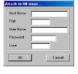

To attach an Impact Analysis report to an Integrity Manager issue
1 In the Model Browser, generate and save the Impact Analysis report you want to attach to an issue.
2 Click .
The Attach to IM Issue dialog box appears.

3 In the Host Name field, enter the name of the Integrity Manager server.
4 In the Port field, enter the port number.
5 In the User Name field, enter the Integrity Manager user name.
6 In the Password field, enter the Integrity Manager password.
7 In the Issue field, enter the ID of the issue you want to attach the Impact Analysis report to.
8 Click OK.
A status dialog box appears, informing you that the report is being attached to the issue.
Once the Impact Analysis report is attached to the issue, you can view or print it from the Integrity Manager command line interface. To view or print attachments, see the Integrity Manager Command Line Reference.